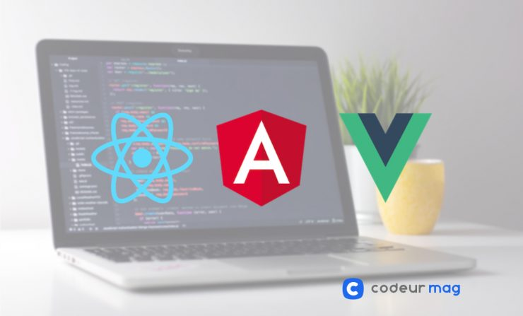
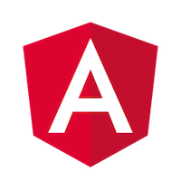
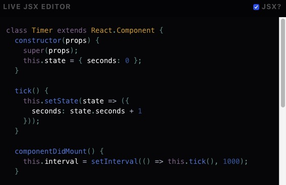

React, Angular, Vue : quel framework JavaScript choisir ?
Si vous maîtrisez un petit peu le JavaScript, vous avez déjà dû vous retrouver face au choix d’un framework front-end pour votre application web. Si tel est le cas, comment avez-vous fait ? Difficile de connaître tous les frameworks, et de savoir rapidement lesquelles conviennent à son projet. C’est pourquoi nous avons choisi de vous proposer un article autour de trois des frameworks les plus populaires, pour passer en revue leurs avantages, inconvénients et caractéristiques spécifiques.
Le choix, relatif à votre utilisation et à votre but
vous utilisiez React, Angular ou Vue, vous serez à même de remplir vos objectifs et d’avancer dans votre projet.
Il faut savoir se lancer et appréhender la solution choisie pour monter en compétence. Vous pourrez apprendre de n’importe laquelle, et retrouver certains concepts et principes dans toutes les autres, que ce soit à travers les notions (API, Templating, Liaison) ou la mise en place technique.
À noter que la performance entre les différents frameworks ne diffère pas réellement et est inhérente à l’utilisation qui en est faite. Ce n’est donc pas un critère de différenciation.
Qui plus est, les documentations sont nombreuses sur Internet et vont vous permettre d’appréhender chaque framework de la meilleure façon possible.
Toutefois, nous allons voir tout de même du côté des avantages et inconvénients de chacun pour mieux cerner celui qu’il vous faut employer.
Angular
Angular compte certainement parmi les cadres JavaScript les plus populaires et les plus utilisés pour créer des applications front. Bien qu’Angular lui-même ne soit pas nouveau et existe depuis un certain temps, la dernière version d’Angular, Angular 2, est très différente de la version précédente. Elle est en effet dotée d’une foule de nouveaux outils et de nouvelles fonctionnalités. Angular 2 fournit par exemple des modèles déclaratifs, qui sont assortis de fonctions de liaison de données. Le framework apporte également l’injection de dépendances ainsi que des tests unitaires pour tester le code côté client, ce qui le rend adapté à toutes les tâches de développement en amont. Il peut également être utilisé pour le développement d’applications graphiques modernes. Pour finir, Angular est connu pour offrir une bonne flexibilité en termes de développement.
Avantages d’Angular
Angular est l’un des frameworks JS les plus performants et robustes. Ses mises à jour fréquentes démontrent l’activité incessante de sa grande communauté, et la capacité d’adaptation d’Angular. En plus de cette communauté extrêmement présente, la documentation officielle est détaillée et permet de mieux l’appréhender. On retrouve ainsi davantage de modèles complets qui aiguillent sur leur mise en place, et offrent un panel de solutions “prêtes à l’emploi”. Très populaire et complet, d’autant qu’il prend en charge le CSS + HTML natif, on retrouve Angular chez de nombreuses entreprises.
Inconvénients d’Angular
Néanmoins attention, car derrière ces nombreux avantages, il existe certains inconvénients qui faut prendre en compte :
L’apprentissage d’Angular est long et ardu, ce qui peut décourager dans un premier temps, surtout lors de premiers développement en intégrant ce type de frameworks.
Très complet pour le développement d’applications web, il peut sembler trop complexe, dans son code notamment. Attention de ne pas se perdre face aux nombreuses solutions offertes (l’expérience étant alors la meilleure des alliées).
Certains problèmes de migration ont pu être rencontrés lors du passage d’anciennes versions vers les nouvelles. Même si ces soucis sont voués à être résolus avec les mises à jour de version, la complexité d’Angular peut entraîner des soucis dans ces mêmes mises à jour.
ReactJS
React, que l’on appelle aussi ReactJS, est une bibliothèque JavaScript libre, créée par Facebook en 2013.
Elle permet de concevoir des applications web via la création de composants dépendants d’un état constituant une portion HTML pour chaque changement d’état.
C’est un framework qui est recommandé par les entreprises proposant des solutions de développement JavaScript. Il s’agit d’un framework de développement web convivial. React peut être utilisé pour créer une interface graphique front et propose un modèle qui convient parfaitement à tous les développeurs web.
ReactJs ne gère que l’interface d’une application web, et peut donc être utilisée avec un framework MVC tel qu’Angular.
Avantages de ReactJS
Le principal avantage de React est qu’il peut aider à développer un composant qui sera réutilisé encore et encore. Cela simplifie donc d’autant le processus de développement web. Ainsi, si les développeurs travaillent avec un groupe d’éléments ayant des données différentes, ils peuvent réutiliser le composant réalisé avec React, uniquement en implémentant un ensemble de données différent. Cela en fait l’un des meilleurs framework Java à utiliser, et fait de React un outil très populaire. ReactJS est utilisé par de nombreuses entreprises de type “startup” ainsi que par Netflix ou Airbnb pour ne citer qu’eux. Il existe également une communauté importante, et donc un appui pour sa progression permanente. Étant 100% open source, React est sans cesse mis à jour et s’adapte en permanence aux contraintes de développement qui évoluent dans le temps. Sur React, la création est simplifiée grâce à sa flexibilité et son API qui permettent une utilisation facile des composants. À noter aussi que ReactJS travaille avec un DOM virtuel, permettant de gagner en performance et en rapidité.
Inconvénients de ReactJS
En face de ces différents avantages, on retrouve quelques inconvénients :
Les modèles des composants sont en JSX et pas en HTML, ce qui nécessite une légère adaptation (bien que l’on reste assez proche du HTML tout de même).
Malgré les éléments qui existent sur la sphère web pour vous aider, il y a un manque de documentation “officielle” sur ReactJS qui ne facilite pas son appréhension lorsque l’on est néophyte. À savoir que ReactJS demande de la pratique, notamment pour l’intégration dans le framework MVC (malgré la simplicité d’utilisation).
React offre énormément de choix aux développeurs. Ce qui peut être perçu comme une qualité, est aussi un défaut puisqu’il ne tranche pas clairement et laisse au développeur le soin de décider. Pas toujours des plus confortable.
Langage JSX
VueJS
VueJS est notre troisième framework JavaScript du jour. Créé en 2013 et lancé en 2014, il est le plus facile à appréhender des trois.
Avantages de VueJS
L’un des gros avantages de VueJS, c’est sa simplicité au vu des choix réduits qu’il offre (contrairement à un ReactJS par exemple). Il va s’adapter en fonction de vos compétences, que vous soyez débutant ou avancé en développement front, et va permettre d’entrer dans le monde des frameworks JS le plus aisément possible.
Associé à ça, vous retrouvez une documentation officielle claire et complète pour vous accompagner.
Pour finir, il est important de noter qu’il est HTML et CSS compatible : vous n’aurez donc pas besoin de vous adapter à un nouveau langage (et vous gagnerez ainsi pas mal de temps).
Inconvénients de VueJS
En inconvénients de VueJS, nous pouvons citer :
Son manque d’historique (il est assez récent) le rend moins optimisé que les autres, puisqu’il a moins vécu et a moins été confronté à des situations problématiques. On peut donc parfois rencontrer certains problèmes d’intégrations.
Sa communauté restreinte (dû notamment au fait qu’il est le plus jeune des trois frameworks).
Voici donc une première approche de trois grands frameworks JavaScript .
Nous voulions ici vous faire entrer dans cet univers, parfois un peu nébuleux, tout en offrant un contenu intéressant aux non-débutants (qui paraîtra assez “basique” pour les plus avancés).
Non exhaustif et surtout en constante évolution, cet article se veut être un éclaircissement vous permettant de conforter votre choix de framework front-end, bien qu’il existe d’autres frameworks JavaScript que vous pourrez découvrir, ou encore utiliser avec un CMS headless .
source : www.codeur.com